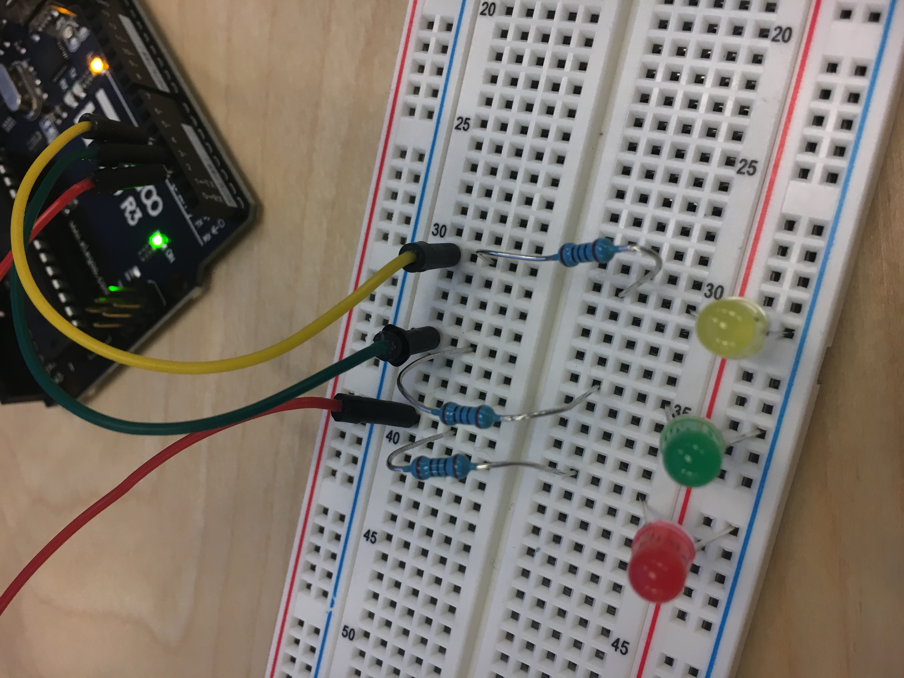
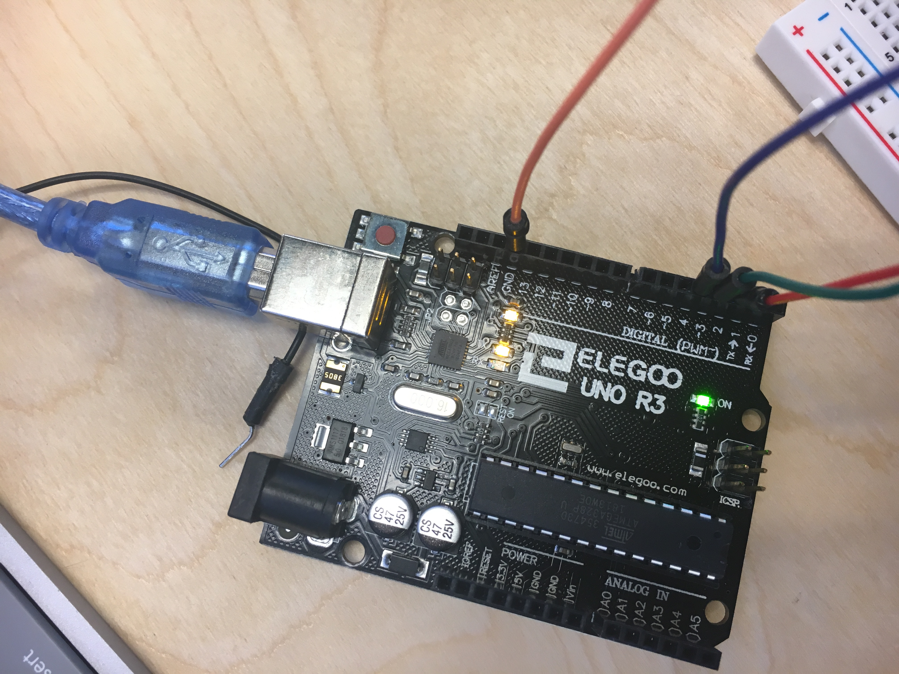
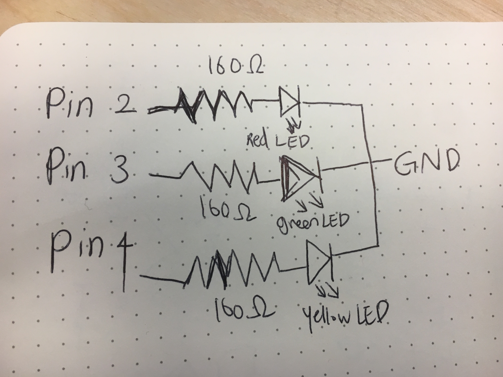

First Assignment - Blink!
Circuit
 chose 100Ω for the resistors for my LEDs because I needed to find the optimal resistor to prevent broken LEDs. The reasoning is -- three(yellow, green, red) have 1.8 V drop. Current is 20 mA. Voltage from Arduino is 5V. Using Ohm’s law(V = I x R), the circulation to find R is:5V - 1.8V = 3.2 V = 0.02 (20mA) x R. R is 160Ω. And the resistors nearest value to 160Ω were 100Ω.
Schematic - the Map
The schematic starts with input(power source) of three pins - pin 2, 3, 4. Then these three pins are connnected to three LED lights independently blinking. So I put three resistors connecting to each light with a optimal level of Ohms. It finishes with GND which circulates the system.
Firmware
//Blink
//Turns an LED on for one second, then off for one second, repeatedly
//the higher the number, the slower the speed of blinking
int timer = 600;
// the setup function runs once when you press reset or power the board
void setup() {
// use for loop to initialize each pin as an output
for (int pin = 1; pin <=5; pin++)
{
pinMode(pin, OUTPUT);
}
}
// the loop function runs over and over again forever
void loop() {
//to help the pins blinking from lowest pin to highest
for (int pin = 1; pin <=5; pin++)
{
//turning on pin
digitalWrite(pin, HIGH);
//applying timer function and adjusting blinking speed
delay(timer);
//turning off pin
digitalWrite(pin, LOW);
}
//to help the pins blinking from highest pin to lowest
for (int pin = 5; pin >=1.; pin--)
{
//turning on pin
digitalWrite(pin, HIGH);
//applying timer function and adjusting blinking speed
delay(timer);
//turning off pin
digitalWrite(pin, LOW);
}
}
Circuit's operation

These three light bulbs begin to blink from left to right in the horizontal direction and blink from right to left again, repeating this action indefinitely. The speed is 600.